This project explores how musical concepts emerge and evolve over time in text-to-audio diffusion models by applying Prompt-Conditioned Interventions (PCI) [1] for AudioLDM2 [2]. By changing the conditioning signal by injecting concepts to the conditioning prompt at different diffusion steps (τ), we analyze the trade-off between concept strength (sensitivity) and preservation of the original audio structure (editability).
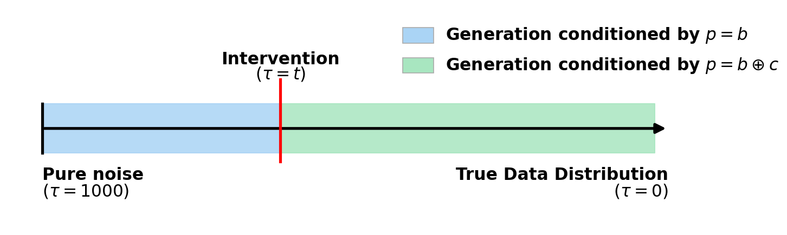
Illustration of Prompt-Conditioned Intervention (PCI) in audio diffusion.
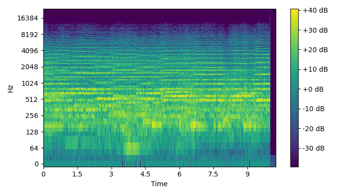
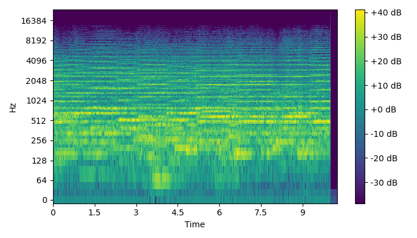
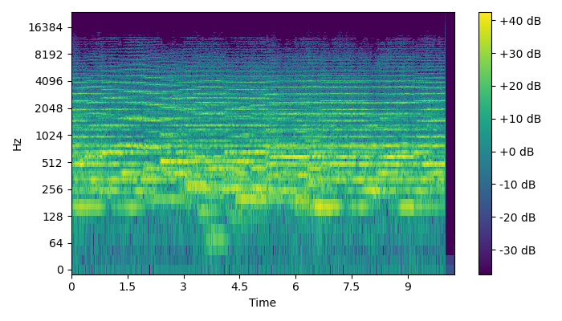
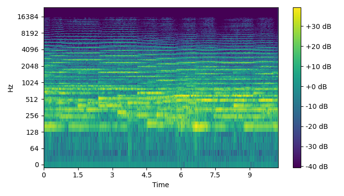
Late interventions successfully introduce the piano while preserving orchestral structure, whereas early interventions have limited effect.
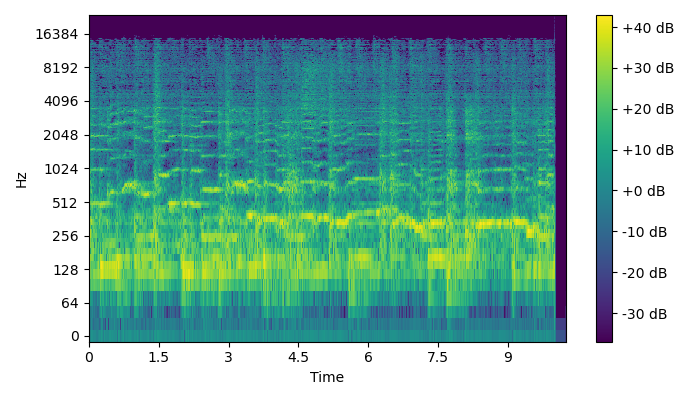
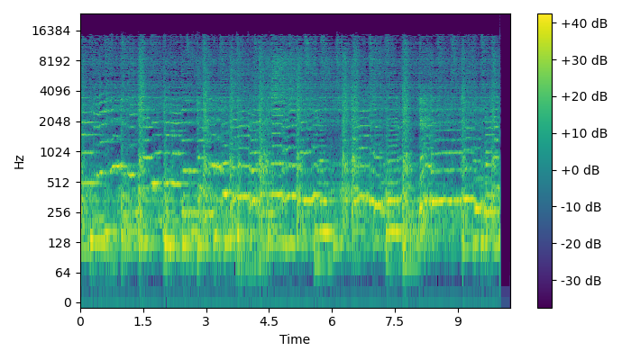
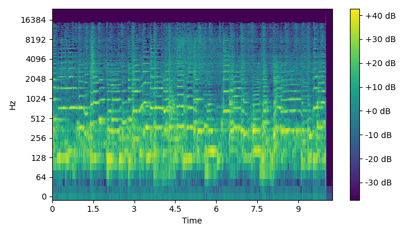
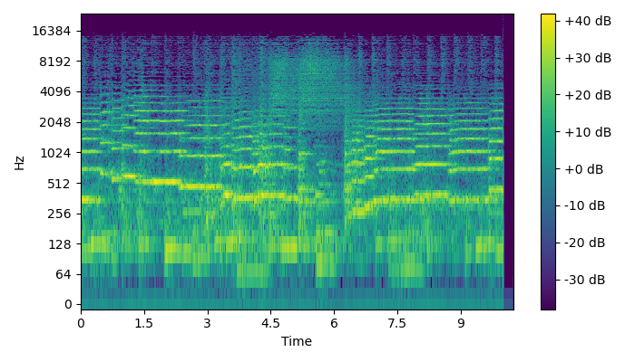
Trumpet shows strong controllability, achieving high concept presence while maintaining base structure across a wide range of timesteps. The lower frequency patterns in the spectrogram of the base prompt generation are almost preserved across all interventions, showing higher editability compared to other instruments.
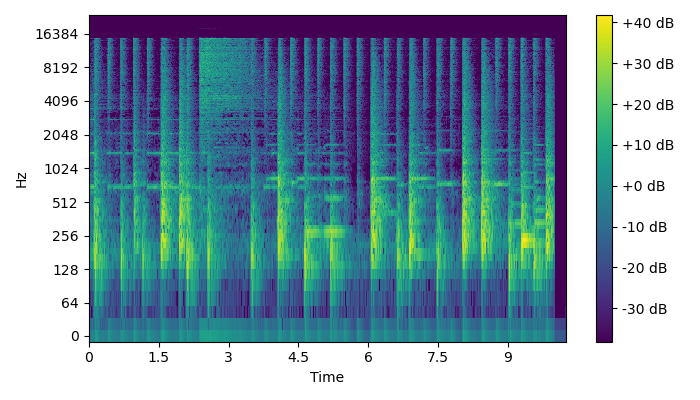
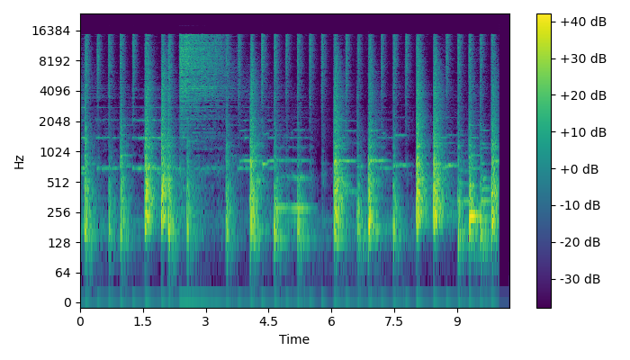
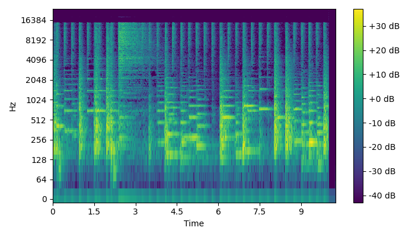
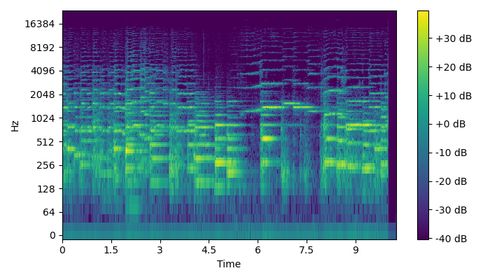
Violin insertion often disrupts the original band structure, reflecting a weaker trade-off between editability and concept strength (see spectrograms for visual reference).
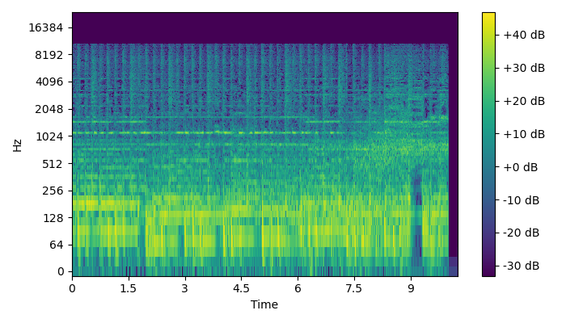
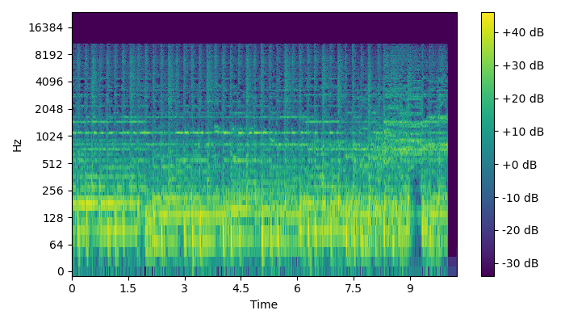
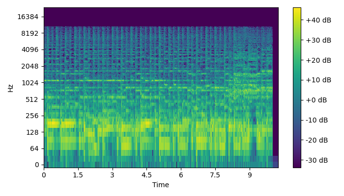
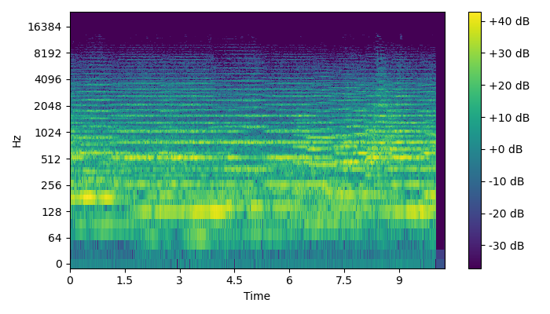
Classical genre only can be effectively inserted in early interventions (τ = 900), even though some classical instruments can be perceived in later interventions. In effective interventions, it fully disrupts the original structure, indicating a weak trade-off between concept strength and editability.
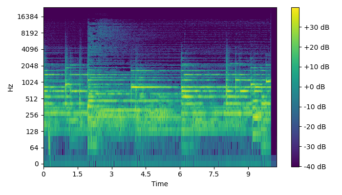
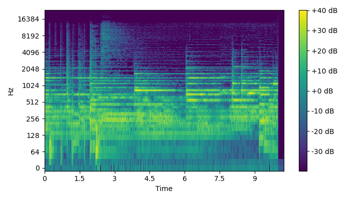
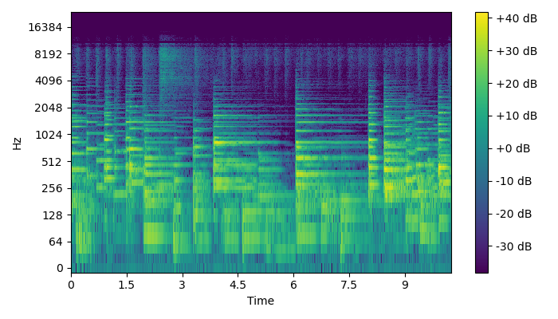
Similar to all genre concepts, jazz can also only be effectively inserted in early interventions, with later interventions showing limited concept presence. In general, genre concepts show a weaker trade-off between concept strength and editability, as they often require significant structural changes to the original audio to be effectively inserted.